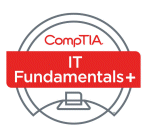

Adam Jenkins
2626 Krishire Drive | Charleston, IL 61920 | (217) 259-3593 | ajenkins.software@gmail.com
https://www.linkedin.com/in/adamjenkins-software
Objective: Obtain a long-term career in software development
Education & Certification:
Western Governors University - Salt Lake City, UT
Bachelor of Science - Software Development - August 2023
Lake Land College - Mattoon, IL
Associate in Applied Science - IT-Programming - May 2023
CompTIA IT-Fundamentals Certification - January 2023
Technical Skills: